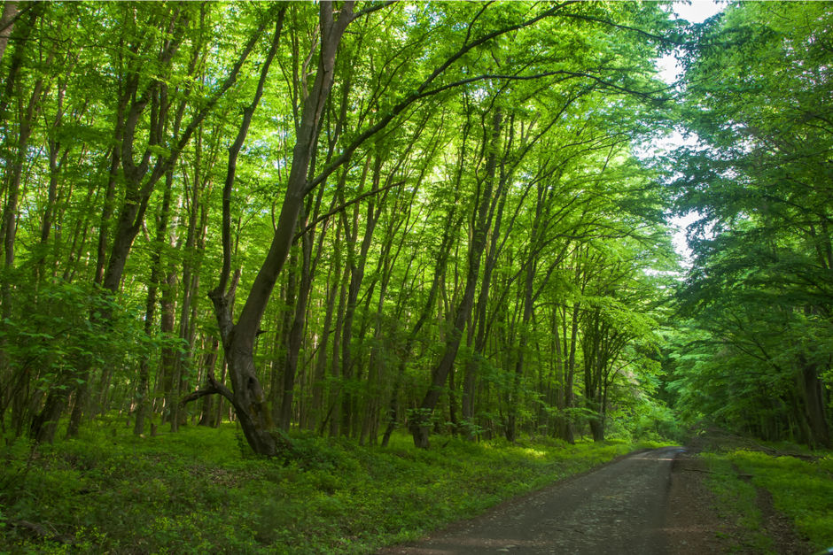

Лес — экологическая система, биоценоз, в которой главной жизненной формой являются деревья.
Лес — составная часть природы, понятие «лес» можно рассматривать на разных уровнях. В глобальном масштабе — это часть биосферы, в локальном — это может быть насаждение. Леса занимают около трети площади суши.